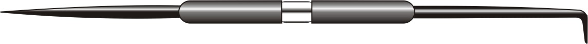
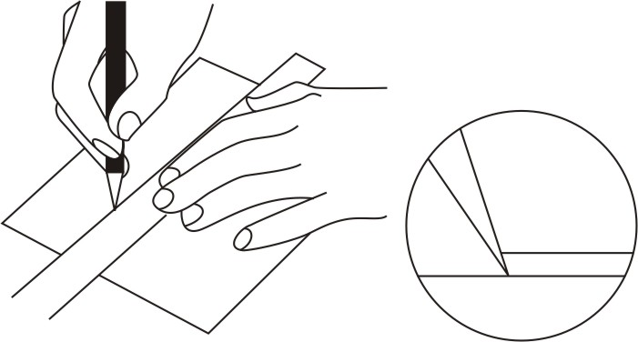
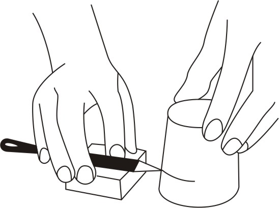

MEASUREMENT, MEASURING TOOLS & LAYOUT TOOLS Tutorial 15 Download
Using Scribers
The scriber is designed to serve one in workshop in the same way a pen serves one in writing in the class room. In general, it is used to scribe or mark lines on metal surfaces, and has two needle pointed ends. Scribers have a scriber point made of tempered high grade tool steel and a handle of steel tubing which may be nickel plated. The point is reversible telescoping into the knurled handle when not in use. Bent point scribers are usually 300 mm long with one straight point and one long or one short bent point bent at a 90 degrees angle for reaching and marking through holes. Some of these scribers are threaded and can be engaged in either end of the handle.

Figure 1: Scriber
Using a scriber
a. Make sure that the point of the scriber is sharp. To sharpen, rotate the scriber between thumb and forefinger while moving the point back and forth on an oilstone.
b. Clean work surfaces from all dirt and oil
c. Place the steel rule or straight edge on the work beside the line to be scribed.
d. Use the fingertips of one hand to hold the rule in position and hold the scriber in the other hand as is done while marking with a pencil.
e. Scribe the line by drawing the scriber along the edge of the rule, at a 450 angle and tipped outward and slightly in the direction it is being moved.

Figure 2: Using a scriber
To mark a line parallel to a surface, Pile up blocks of wood or metal to position the scriber at the required height when it is laid flat on top. Small adjustments can be made by adding strips of cardboard or sheet metal. Place the workpiece on the surface aligning the mark with the point on the scriber. Hold the scriber firmly in place with one hand and rotate the object against the point to mark a line.

Figure 3: Using scriber to mark a line parallel.
Care of scribers
a. Place a cork or soft wood over point of scriber when not in use. Coat scriber with anti-rust material before storage. Do not throw scribers in drawer with other tools. This practice can cause damage to scribers and injury to personnel.
b. Place punch on rest and place point on abrasive wheel. Rotate punch during grinding to obtain cone shape.
c. Dip punch in water frequently to preserve temper.
d. Do not grind away more metal than is necessary to obtain a sharp cone-shaped point.
Reshaping mushroomed head
If the head of the punch becomes mushroomed after extended use, grind to original shape on a grinder wheel. Restore temper after grinding.
Restoring temper
If the point or the flat end of a punch is ground beyond the hardened section, if the mushroomed head was reshaped or if the punch was overheated in grinding, the punch must be hardened and tempered